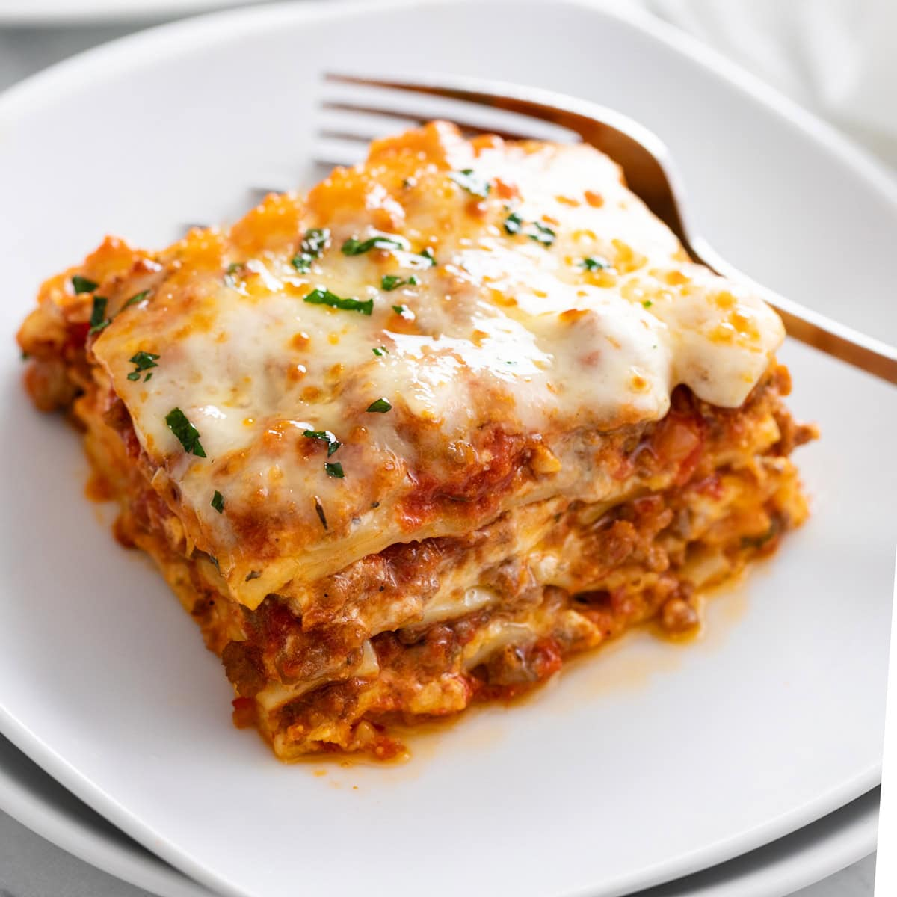

Lasagna

Description:
Lasagna is a layered baked dish, with alternating sheets and fillings thata create a compct structure,
topped with a golde crusta and a soft, rich interior.
Ingredients:
- Lasagna sheets (pasta)
- Ground meat(often beef, pork or a mix
- Onion, garlic and herbs (such as basil, oregano)
- Olive oil
- Béchamel sauce (butter,flour, milk nutemeg)
- Grated chees (like Parmesan)
- Soft melting chees (such as mozzarella)
- Salt and pepper
Steps:
- Prepare the sauce - cook ground meat with onion, garlic, herbs, and tomaso sauce until rich and thick.
- Make the béchamel - in a saucepan, metl butter, whisk in flour, then slowlyadd milk unitl smooth and creamy.
Add a pinch of nutmeg, salt and pepper.
- Preheat the layers - set it to about 180 C.
- Assemble the layers - in a baking , spread a thin layer of meat sauce then place pasta sheets.
Add more meat sauce, a layer of béchamel and some cheese. Repeat until the dish is nearly full.
- Finish the top - cover with a finla layer of pasta, bechamel and plenty of grated cheese.
- Bake - palce in the oven for 35-40 minutes, until the top is golden and bubbling.
- Rest before serving - lei is sit for abut 10 minutes so the layers set and are easier tu cut.